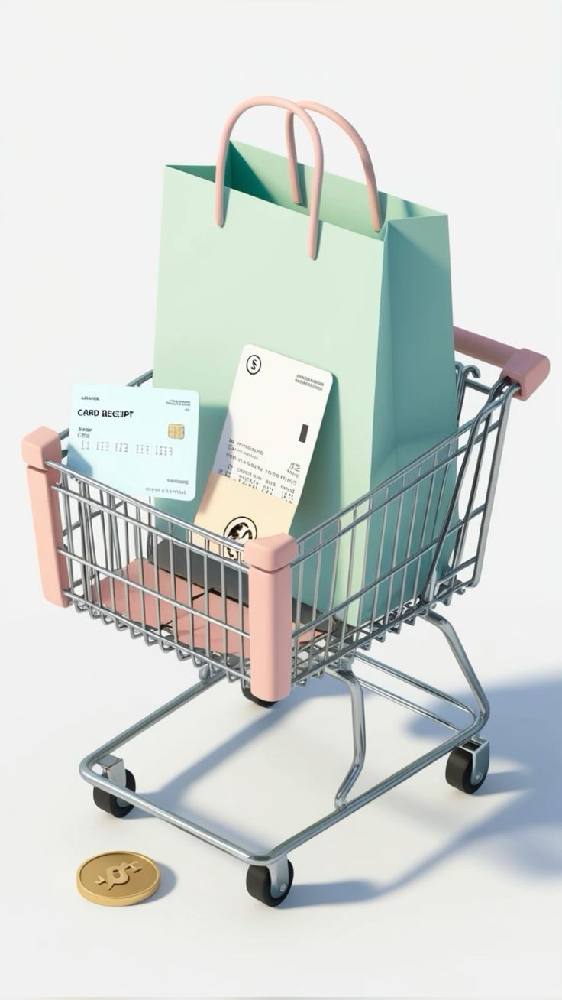

GIVE YOUR CLOTHES
A SECOND LIFE
Cara termudah untuk menjual, mendonasikan, atau mendaur ulang tekstil Anda secara bertanggung jawab.
Mulai SekarangUntuk Individu
Beli barang second-hand sesuai selera anda
Untuk Distributor
Kelola pakaian tak terpakai dari rumah. Kami jemput dan berikan kesempatan kedua bagi kainmu.
LAYANAN KAMI
